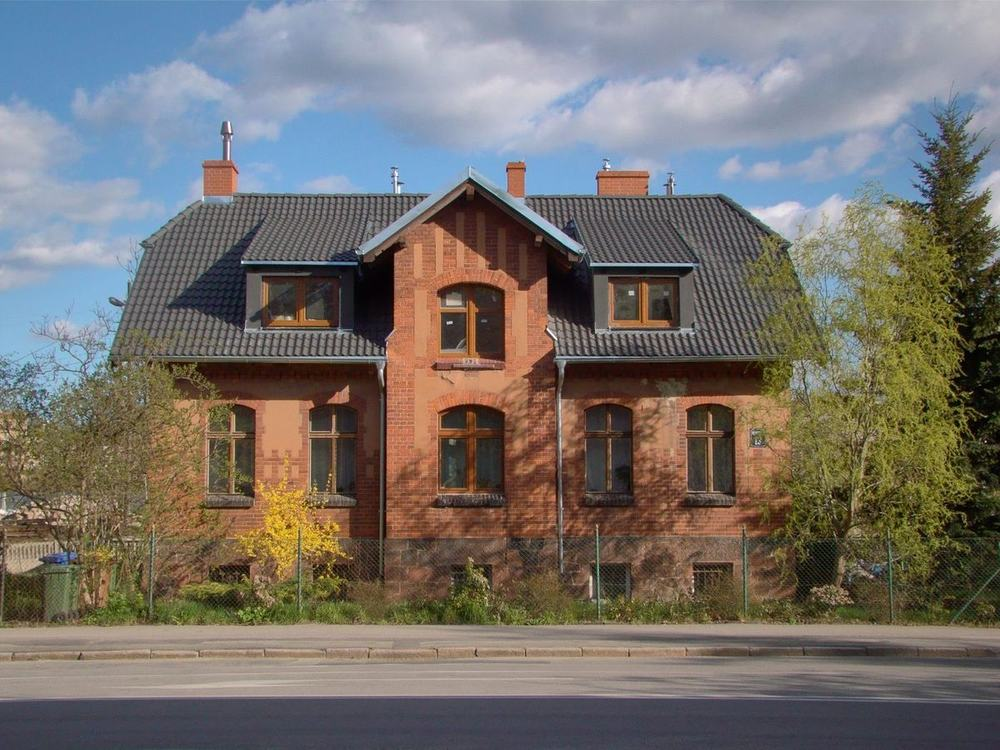

Alle Grundlagen und Bausteine der neuen Website der Hausverwaltung Groterhorst, so wie sie in design/ tatsächlich verwendet werden. Die Bausteine unten nutzen dasselbe CSS wie die Seiten.
Schwarz, Weiß, Grau und Rot. Es gibt keine Rot-Abstufungen und keine eigenen Farben für Eigentümer:innen oder Mieter:innen.
--black--white--gray--red--text-2 Schwarz 70 %--linie Schwarz 14 %Eine einzige Schrift in den Schnitten 400, 600 und 700, lokal eingebunden (design/fonts/, variable Schrift, SIL Open Font License) – ohne Verbindung zu Google. Hierarchie entsteht über Größe und Gewicht, Zeilenhöhe 1,6.
Sie vermieten. Wir kümmern uns um den Rest.
Alles aus einer Hand.
Lieber persönlich?
Regelmäßige Objektkontrollen
Ob Wasserschaden, Frage zur Abrechnung oder Formular – hier finden Sie es.
Die Hausverwaltung Groterhorst ist in Geldern ansässig. Unser Büro liegt am Wohnort von Birgit Groterhorst.
„Probleme sind Herausforderungen, die mich prüfen und stärken.“
Großzügige Rundungen und viel Weißraum auf einem 8-px-Raster.
32 px
Karten, Bilder, Dialog, Buttons (--radius-karte, --radius-btn)
24 px
Kleinere Elemente: Akkordeon, Downloads, Hinweise, Auswahl-Kacheln
8 px
Eingabefelder (--radius-input)
Google Material Icons in der Variante „Round“ (Apache 2.0) – gerundet passend zu Karten und Buttons, in Rot auf einem runden grauen Hintergrund oder direkt in Buttons. Alle Icons mit Einsatzort: Icon-Übersicht →
offene-fragen-birgit.md).Komplett runde Buttons. Pro Bereich gibt es höchstens eine primäre Aktion.
design/leisten.js): Der Header blendet sich beim Runterscrollen aus und beim Hochscrollen wieder ein. Die Aktionsleiste blendet sich aus, solange dieselbe Aktion schon auf der Seite sichtbar ist (data-leiste-aus, z. B. im Notfallkasten).Karten bündeln Inhalte. Auf grauem Hintergrund stehen sie weiß mit Schatten, auf weißem Hintergrund mit grauem Rand.
Ihre Immobilie in guten Händen
Verwaltung, Vermietung und Vermarktung – wir kümmern uns um den Rest.

Leistungskarte mit Haken-Liste
Vor Ort in Geldern
Icon im grauen Kreis, Titel, kurzer Text. Auf Weiß mit Rand.
Kennenlernen
Schrittkarte im Slider, mit roter Nummer.
Haus & Grund an der Niers
Karte mit Kicker statt Icon.
Für Informationen, die man nicht übersehen soll, ohne dass sie den Inhalt verdrängen.
Notfall? Rufen Sie sofort an.
Neben dem Footer die einzige schwarze Fläche. Bewusst nur für Notfälle reserviert.
Die Abrechnung muss Ihnen spätestens zwölf Monate nach Ende des Abrechnungszeitraums vorliegen.
Das regelt Ihr Mietvertrag.
Label immer über dem Feld, freiwillige Felder werden markiert, Pflichtfelder nicht. Eingabefelder haben 8 px Radius.
design/formular.js): Fehlt etwas, bekommt das Feld einen roten Rand mit leichtem roten Schein, darunter steht ein roter, kurzer Hinweis in ganzen Sätzen („Bitte geben Sie Ihren Namen an.“). Der Fokus springt ins erste fehlerhafte Feld, der Hinweis verschwindet, sobald das Feld passt. Keine Standard-Sprechblasen des Browsers.„Schaden melden“ öffnet sich als Dialog über der aktuellen Seite (design/schaden-dialog.js). Desktop: zentriert, 720 px breit. Mobil: Blatt von unten, fast bildschirmhoch.
Schaden melden
Je genauer Ihre Angaben, desto schneller können wir helfen.
1 — Was ist passiert?… Kacheln, Felder, Upload und Absenden wie oben.
#schaden-melden und direkt beim Aufruf einer Adresse mit #schaden-melden.Alle Seiten folgen demselben Rahmen.
<main id="inhalt">, einheitlicher Tastaturfokus (2 px schwarzer Ring mit 3 px Abstand, auf schwarzem Grund weiß).design/status.js): „Jetzt geöffnet · bis 16:30 Uhr“ bzw. „Gerade geschlossen · wieder morgen ab 8:30 Uhr“, live nach Uhrzeit in Geldern. An gesetzlichen Feiertagen (bundesweit plus NRW: Fronleichnam, Allerheiligen) steht dort „Heute Feiertag – geschlossen“. In den Öffnungszeiten-Listen steht dazu die Zeile „Feiertage – geschlossen“. Im Notfallkasten zweizeilig: Zustand fett, darunter die Erklärung.design/karte.js): Google Maps lädt erst nach Klick auf „Karte laden“. Bis dahin steht ein grauer Platzhalter mit Pin, Datenschutz-Hinweis und Outline-Button im Rahmen der Karte.design/.